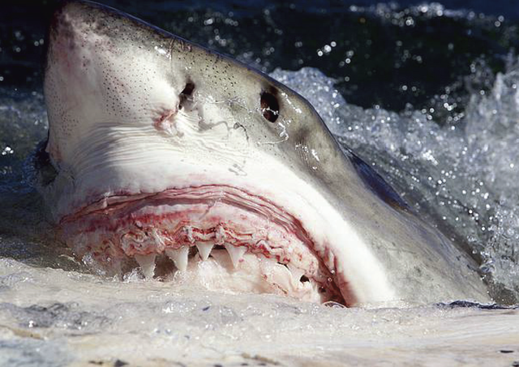
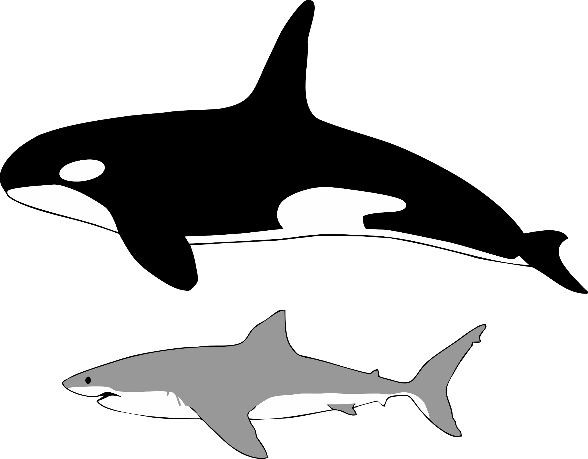
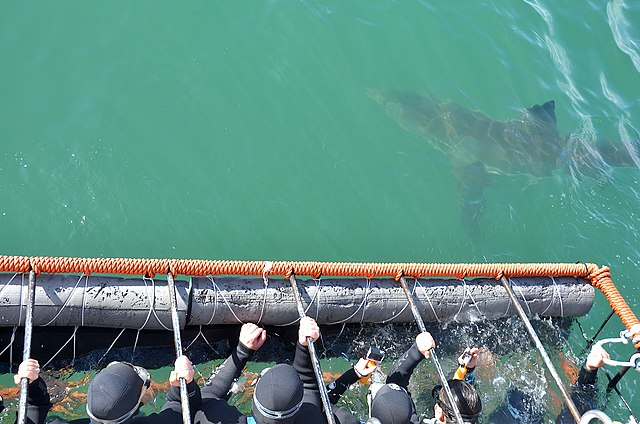

Sharks are much older than dinosaurs. Their ancestry dates back more
than 400 million years, and they are one of evolutions greatest
success stories. These animals are uniquely adapted to their ocean
environment with six highly refined senses of smell, hearing, touch,
taste, sight, and even electromagnetism. As the top predators in the
ocean, great white sharks (Carcharodon carcharias) face only one
real threat to their survival: us. In some areas great white
populations have plummeted by over 70%. If not stopped, it could
lead to the extinction of this ancient species.
[1]
Taxonomy
The great white is the sole recognized extant species in the genus
Carcharodon, and is one of five extant species belonging to the
family Lamnidae.[2] Other members
of this family include the mako sharks, porbeagle, and salmon shark.
The family belongs to the Lamniformes, the order of mackerel
sharks.[3]
For a long time, scientists thought the Megalodon was the direct
ancestor of great white sharks. But new fossil evidence, announced
in , suggest that it
was more closely related to an ancestor of mako sharks—smaller but
faster fish-eating sharks.[1]
Habitat
Great white sharks live in almost all coastal and offshore waters
which have water temperature between 12 and 24 °C (54 and 75 °F),
with greater concentrations in the United States (Northeast and
California), South Africa, Japan, Oceania, Chile, and the
Mediterranean including Sea of Marmara and Bosphorus.[4]
One of the densest-known populations is found around Dyer Island,
South Africa.[5]
The great white is an epipelagic fish, observed mostly in the
presence of rich game, such as fur seals, sea lions, cetaceans,
other sharks, and large bony fish species. In the open ocean, it has
been recorded at depths as great as 1,200 m (3,900 ft). These
findings challenge the traditional notion that the great white is a
coastal species.[6]
fig-1: Shows a map with area's where great white sharks have
been know to travel
That great white sharks can be found off the coast of
Newfoundland Labrador.
Thanks to the
Shark Tracker APP from Ocearch. Helena is part of a group of great white sharks
that put up with the icy temperatures to take advantage of the
large fish stocks. Bob Hueter cheif scientis for Ocearch recalls
Helena
"She's gone on quite a trek since we tagged her, the shark has
travelled over 20,000 kilometres around the Atlantic Ocean." "This
is her second trip up to the Grand Banks area.… She really seems
to like it there in the summer time."
Fig-2 a picture from Ocearch when researchers caught and tagged
Helena, a four-metre-long great white shark in 2019.
Eigth Interesting Facts About The Antomy Of A Great White Shark
8. Great white sharks are grey with a white
underbelly, from where they get their name. They have a
streamlined torpedo shape and powerful
tails that propel them through the water at
over 60km per hour! [7]
7. In great white sharks,
sexual dimorphism
is present, and
females are generally larger than males. Male great whites on average measure (11 to 13 ft) long, while
females at 15 to 16 ft. Adults of this species weigh
(1,151-1,700 lb) on average; however, mature females can have
an average mass of (1,500-2,450 lb). The largest females have
been verified up to 20 ft in length and
an estimated 4,200 lb in weight[10].
fig-3: Shows the difference in size between a human and a great
white
6. Great white sharks have such a strong sense of
smell that they
can detect a colony of seals two miles away. If there was only one drop of blood in 100 litres of water, a
great white would smell it! What gives a Great White such good
smell their nostrils are on the underside of the snout and lead to
an organ called the olfactory bulb. The
great white's olfactory bulb is reported to be the largest of
any shark.[1]
5. Great white sharks has great vision. The retina of
its eye is divided into two areas - one adapted for day
vision, the other for low-light and night.The great white shark
can roll its eye backward into the socket
when feeding to protect its eyes.[1]
4. Sharks have a sense that humans can only be in awe
of -
they can sense an electrical field. A
series of pores on the shark's snout are filled with cells
called the Ampullae of Lorenzini that can feel the power and
direction of electrical currents. Scientists have discovered that
sharks can use this sense to navigate through the open ocean by
following an electrical map of the magnetic fields that crisscross
the Earth's crust.[1]
3. To more successfully hunt fast and agile prey the
great white has adapted to
maintain a body temperature warmer than the surrounding
water. One of these adaptations is a "rete mirabile". This close
web-like structure of veins and arteries, located along each
lateral side of the shark, conserves heat by warming the cooler
arterial blood with the venous blood that has been warmed by the
working muscles. This keeps certain parts of the body
(particularly the stomach) at temperatures up to 14 °C (25 °F)
[96] above that of the surrounding water, while the heart and
gills remain at sea temperature. When conserving energy, the core
body temperature can drop to match the surroundings.
[1]
2. Like all sharks, the great white has jaws that are
unique from other animals because both the
top and bottom jaws move. A great white
shark will ambush its prey, attack by biting with the lower jaw
and then its upper jaw. It shakes its head back and forth tearing
off flesh. A great white shark, may have up to
3,000 serrated teeth at one time with
five rows of teeth at any given time. The front set of teeth is
the largest and does most of the biting.The great white shark may
grow and use more than 20,000 teeth in
its lifetime. The great white
will never run out of teeth because if
one is lost, another spins forward from a coil-like tooth
reservoir of backup teeth in the jaw and spins forward to replace
the old one.[7]
1. A 2007 study from the University of New South
Wales in Sydney, Australia, used CT scans of a shark's skull and
computer models to measure the shark's maximum bite force. The
study reveals the forces and behaviours its skull is adapted to
handle and resolves competing theories about its feeding
behaviour. [8]In 2008, a team of scientists led by Stephen Wroe conducted an
experiment to determine the great white shark's jaw power and
findings indicated that a specimen massing (7,328 lbcould exert a
bite force of(4,095 lbf).
[9] To put that in prospective the
guiness world record for human bite force is 975lbs.
Ecology
Diet
Whilst many think of these beasts as fearsome man-eaters, humans
aren't, in fact, on the great white's menu. There are
around 5-10 attacks a year, but researchers believe that, rather
than preying on humans to eat them, the sharks are instead taking
a “sample bite” out of curiosity, before swimming off.
[7]
So what do they eat? Well, when they're young, they feed
on small prey, such as fish and rays. But when they're
older and bigger, they generally feast on sea mammals such as
sea lions, seals and small whales. Check out this video by
Islem Benzegouta from Pexels of a great white shark breaching
out of the water to get a seal
[7]
Whale carcasses comprise an important part of the diet of
white sharks. However, this has rarely been observed due to
whales dying in remote areas. It has been estimated that 30 kg
(66 lb) of whale blubber could feed a 4.5 m (15 ft) white
shark for 1.5 months. Detailed observations were made of four
whale carcasses in False Bay between 2000 and 2010. Sharks
were drawn to the carcass by chemical and odour detection,
spread by strong winds. After initially feeding on the whale
caudal peduncle and fluke, the sharks would investigate the
carcass by slowly swimming around it and mouthing several
parts before selecting a blubber-rich area. During feeding
bouts of 15-20 seconds the sharks removed flesh with
lateral headshakes, without the protective ocular rotation
they employ when attacking live prey.
The sharks were frequently observed regurgitating chunks of
blubber and immediately returning to feed, possibly in order
to replace low energy yield pieces with high energy yield
pieces, using their teeth as mechanoreceptors to distinguish
them. After feeding for several hours, the sharks appeared to
become lethargic, no longer swimming to the surface; they were
observed mouthing the carcass but apparently unable to bite
hard enough to remove flesh, they would instead bounce off and
slowly sink. Up to eight sharks were observed feeding
simultaneously, bumping into each other without showing any
signs of aggression; on one occasion a shark accidentally bit
the head of a neighbouring shark, leaving two teeth embedded,
but both continued to feed unperturbed. Smaller individuals
hovered around the carcass eating chunks that drifted away.
Unusually for the area, large numbers of sharks over five
metres long were observed, suggesting that the largest sharks
change their behaviour to search for whales as they lose the
manoeuvrability required to hunt seals.
[11]

fig-5 This is a picture of a great white shark feeding on a
whale carcus
Image By Fallows C, Gallagher AJ, Hammerschlag N (2013) -
Fallows C, Gallagher AJ, Hammerschlag N (2013) White Sharks
(Carcharodon carcharias) Scavenging on Whales and Its
Potential Role in Further Shaping the Ecology of an Apex
Predator. PLoS ONE 8(4): e60797.
CC BY 2.5,
Link
Did you Know?
These cunning creatures like to take their prey by
surprise. They usually position themselves underneath their
unsuspecting victims before swimming up and…chomp! They
often burst out of the water in a leap (called a breach)
before falling back in with their meal in their mouths.
[7]
Reproduction
Great white sharks were previously thought to reach sexual
maturity at around 15 years of age, but are now believed to take
far longer; male great white sharks reach sexual maturity at age
26, while females take 33 years to reach sexual
maturity.[9][130][131] Maximum life span was originally believed
to be more than 30 years, but a study by the Woods Hole
Oceanographic Institution placed it at upwards of 70 years.
Examinations of vertebral growth ring count gave a maximum male
age of 73 years and a maximum female age of 40 years for the
specimens studied. The shark's late sexual maturity, low
reproductive rate, long gestation period of 11 months and slow
growth make it vulnerable to pressures such as overfishing and
environmental change. [12]
Did you Know?
When a great white gives birth, she usually has two to ten
youngsters, called “pups“. But she shows no care for her
offspring. In fact, she may even try to eat them! Taking care of
themselves, the newborn pups will immediately swim off into the
ocean. [7]
Natural Threats
In 2015, a pod of killer whales was recorded to have killed a
great white shark off South Australia.
[13] In 2017, three great
whites were found washed ashore near Gansbaai, South Africa,
with their body cavities torn open and the livers removed by
what is likely to have been killer whales.[144] Killer whales
also generally impact great white distribution. Studies
published in 2019 of killer whale and great white shark
distribution and interactions around the Farallon Islands
indicate that the cetaceans impact the sharks negatively, with
brief appearances by killer whales causing the sharks to seek
out new feeding areas until the next season.
[14] Occasionally, however,
some great whites have been seen to swim near killer whales
without fear [15]

This images shows the different in size between a orca whale
and a great white shark
Of all shark species, the great white shark is responsible for by
far the largest number of recorded shark bite incidents on humans,
with 272 documented unprovoked bite incidents on humans as of
2012. [16]
More than any documented bite incident, Peter Benchley's
best-selling novel Jaws and the subsequent 1975 film adaptation
directed by Steven Spielberg provided the great white shark with
the image of being a "man-eater" in the public mind.
[17] While great white sharks
have killed humans in at least 74 documented unprovoked bite
incidents, they typically do not target them: for example, in the
Mediterranean Sea there have been 31 confirmed bite incidents
against humans in the last two centuries, most of which were
non-fatal. Many of the incidents seemed to be "test-bites". Great
white sharks also test-bite buoys, flotsam, and other unfamiliar
objects, and they might grab a human or a surfboard to identify
what it is.
Did you Know?
Peter Benchley's who made millions off his best selling novel
Jaws regretted writing the book because of the fear and
negatively it created about sharks. In fact later in life he
became a shark conservatist and if he was to write the book
again he would make the shark the victim not the villian
Shark Culling
Shark culling is the deliberate killing of sharks by a government
in an attempt to reduce shark attacks; shark culling is often
called "shark control".These programs have been criticized by
environmentalists and scientists—they say these programs harm the
marine ecosystem; they also say such programs are "outdated,
cruel, and ineffective". Many different species (dolphins,
turtles, etc.) are also killed in these programs (because of their
use of shark nets and drum lines)—15,135 marine animals were
killed in New South Wales' nets between 1950 and 2008, and 84,000
marine animals were killed by Queensland authorities from 1962 to
2015. [18]
In 2014 the state government of Western Australia led by Premier
Colin Barnett implemented a policy of killing large sharks. The
policy, colloquially referred to as the Western Australian shark
cull, was intended to protect users of the marine environment from
shark bite incidents, following the deaths of seven people on the
Western Australian coastline in the years 2010-2013. Baited
drum lines were deployed near popular beaches using hooks designed
to catch great white sharks, as well as bull and tiger sharks.
Large sharks found hooked but still alive were shot and their
bodies discarded at sea. The government claimed they were not
culling the sharks, but were using a "targeted, localised, hazard
mitigation strategy".
[19] Barnett described opposition
as "ludicrous" and "extreme", and said that nothing could change
his mind.[163] This policy was met with widespread condemnation
from the scientific community, which showed that species
responsible for bite incidents were notoriously hard to identify,
that the drum lines failed to capture white sharks, as intended,
and that the government also failed to show any correlation
between their drum line policy and a decrease in shark bite
incidents in the region. [20]
Shark Toursim
Cage diving is most common at sites where great whites are
frequent including the coast of South Africa, the Neptune Islands
in South Australia, [21] and
Guadalupe Island in Baja California. The popularity of cage diving
and swimming with sharks is at the focus of a booming tourist
industry. [22] A common practice
is to chum the water with pieces of fish to attract the sharks.
These practices may make sharks more accustomed to people in their
environment and to associate human activity with food; a
potentially dangerous situation. By drawing bait on a wire towards
the cage, tour operators lure the shark to the cage, possibly
striking it, exacerbating this problem. Other operators draw the
bait away from the cage, causing the shark to swim past the
divers.

fig-7 A group of tourist in a shark cage while a great whtie
swims by
Due to the vast amounts of resources required and the
subsequent cost to keep a great white shark alive in captivity,
their dietary preferences, size, migratory nature, and the
stress of capture and containment, permanent exhibition of a
great white shark is likely to be unfeasible. As of
there are
no great white sharks in captivity
[23]
Conservation
Did you Know?
Great white sharks are at the top of the food chain and
aren't likely to be killed by other sea creatures. Sadly,
however, they are under serious threat by human activity. Illegal
hunting of these beautiful beasts, and overfishing, have meant
that today great white sharks are a vulnerable species on the IUCN
Red List. [7]
It is unclear how much of a concurrent increase in fishing for great
white sharks has caused the decline of great white shark populations
from the 1970s to the present. No accurate global population numbers
are available, but the great white shark is now considered
vulnerable. [24] Sharks taken
during the long interval between birth and sexual maturity never
reproduce, making population recovery and growth difficult.
The IUCN notes that very little is known about the actual status of
the great white shark, but as it appears uncommon compared to other
widely distributed species, it is considered vulnerable. It is
included in Appendix II of CITES,[15] meaning that international
trade in the species (including parts and derivatives) requires a
permit. [25] As of March 2010, it
has also been included in Annex I of the CMS Migratory Sharks MoU,
which strives for increased international understanding and
coordination for the protection of certain migratory sharks.
[26] A February 2010 study by
Barbara Block of Stanford University estimated the world population
of great white sharks to be lower than 3,500 individuals, making the
species more vulnerable to extinction than the tiger, whose
population is in the same range.
[27] According to another study from
2014 by George H. Burgess, Florida Museum of Natural History,
University of Florida, there are about 2,000 great white sharks near
the California coast, which is 10 times higher than the previous
estimate of 219 by Barbara Block.
[28]
Australia
The great white shark was declared vulnerable by the Australian
Government in 1999 because of significant population decline and
is currently protected under the Environmental Protection and
Biodiversity Conservation (EPBC) Act.The causes of decline prior
to protection included mortality from sport fishing harvests as
well as being caught in beach protection netting.
The national conservation status of the great white shark is
reflected by all Australian states under their respective laws,
granting the species full protection throughout Australia
regardless of jurisdiction. Many states had prohibited the killing
or possession of great white sharks prior to national legislation
coming into effect. The great white shark is further listed as
threatened in Victoria under the Flora and Fauna Guarantee Act,
and as rare or likely to become extinct under Schedule 5 of the
Wildlife Conservation Act in Western Australia.[29]
The Australasian population of great white sharks is believed to
be in excess of 8,000-10,000 individuals according to genetic
research studies done by CSIRO, with an adult population estimated
to be around 2,210 individuals in both Eastern and Western
Australia. The annual survival rate for juveniles in these two
separate populations was estimated in the same study to be close
to 73 percent, while adult sharks had a 93 percent annual survival
rate. Whether or not mortality rates in great white sharks have
declined, or the population has increased as a result of the
protection of this species in Australian waters is as yet unknown
due to the slow growth rates of this species.
[30]
New Zealand
As of April 2007, great white sharks were fully protected within
370 km (230 mi) of New Zealand and additionally from fishing by
New Zealand-flagged boats outside this range. The maximum penalty
is a $250,000 fine and up to six months in prison.
[31] In June 2018 the New Zealand
Department of Conservation classified the great white shark under
the New Zealand Threat Classification System as "Nationally
Endangered". The species meets the criteria for this
classification as there exists a moderate, stable population of
between 1000 and 5000 mature individuals. This classification has
the qualifiers "Data Poor" and "Threatened Overseas".
North America
In 2013, great white sharks were added to California's Endangered
Species Act. From data collected, the population of great whites
in the North Pacific was estimated to be fewer than 340
individuals. Research also reveals these sharks are genetically
distinct from other members of their species elsewhere in Africa,
Australia, and the east coast of North America, having been
isolated from other populations.
[32]
A 2014 study estimated the population of great white sharks along
the California coastline to be approximately 2,400. In 2015
Massachusetts banned catching, cage diving, feeding, towing
decoys, or baiting and chumming for its significant and highly
predictable migratory great white population without an
appropriate research permit. The goal of these restrictions is to
both protect the sharks and public health.
[33]
Contact Us
Get in Touch
Want to get in touch? We'd love to hear from you. Here's how you can
reach us...


{kind=link}